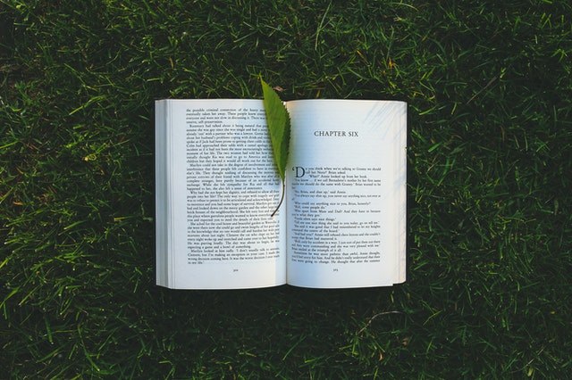

Finding simplicity in life
Life can et complicated really quickly, but it doesn't have to be! There are many ways to simplicty in your life, a few of which we've explored in the past. This week we're taking a bit of a approuch though, in how you can find simplicity in the life you already living.
CONTINUE READING

April 2, 2021 | 7 comments